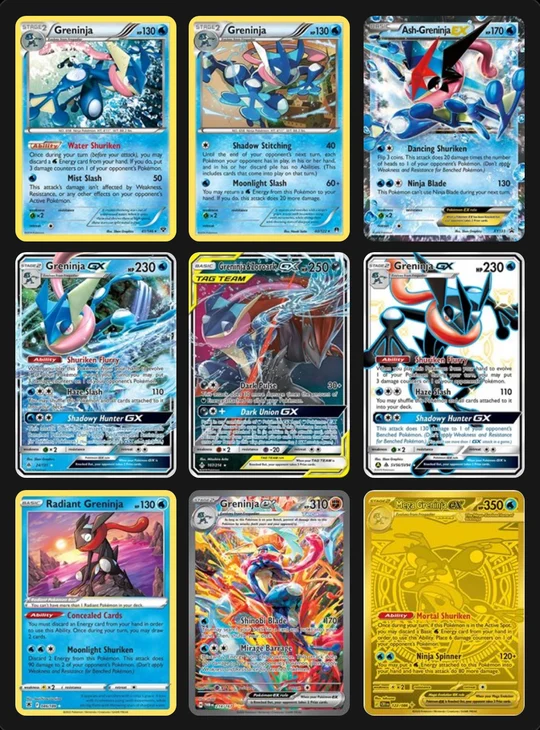

Pokémon binder page
The Greninja binder page

The page, pocket by pocket
Read it like a book: the top row runs from 2014 to 2016, the middle row from 2018 to 2019, and the bottom row from 2022 to today.
| Card | Set | Year | |
|---|---|---|---|
| 1 | Greninja, holo, 41 of 146 | XY | 2014 |
| 2 | Greninja, 40 of 122 | BREAKpoint | 2016 |
| 3 | Ash-Greninja-EX, promo | XY promos | 2016 |
| 4 | Greninja GX | Forbidden Light | 2018 |
| 5 | Greninja & Zoroark GX | Unbroken Bonds | 2019 |
| 6 | Greninja GX, shiny | Hidden Fates | 2019 |
| 7 | Radiant Greninja | Astral Radiance | 2022 |
| 8 | Greninja ex, special illustration | Twilight Masquerade | 2024 |
| 9 | Mega Greninja ex, gold | Chaos Rising | 2026 |
One pocket that breaks the pattern
Pocket six is the same Greninja GX as pocket four, reprinted in its shiny colours for Hidden Fates' Shiny Vault: black instead of blue. It is the only shiny card on the page, and with the two side by side in the middle row, the colour change is the first thing people notice.
Three layouts, compared
1. Oldest to newest. The page pictured above. One Greninja per era, read like a timeline.
2. Froakie to Greninja. Greninja evolves from Frogadier, which evolves from Froakie. Put Froakie, Frogadier and Greninja across each row, one row per set, so every row shows the whole evolution and the page shows three eras.
3. Kalos's first page. In a Pokédex binder that starts each region on a fresh page, Kalos's 72 Pokémon fill exactly 8 pages. Greninja is number 658, so it lands in pocket nine of page one, and that page holds all three Kalos starters with their evolutions, one line per row.
Kalos's first page: Greninja in pocket nine.
| Layout | Pages | Best for |
|---|---|---|
| Oldest to newest | 1 | Greninja's whole history at a glance |
| Froakie to Greninja | 1 | Showing the evolution on every row |
| Kalos's first page | 1 | A Pokédex binder in number order |
Try it before you sleeve
Moving nine cards around a real page is slow, and every move risks a scuff. Try the order on screen first, as many times as you like.
- Open the free page builder. No account needed.
- Type Greninja. The builder lists Greninja cards with the set each one comes from. Add a word from the set name, such as Greninja Radiant, to see fewer cards.
- Tap one card for each pocket, oldest first. Pockets fill in the order you tap.
- Tap See page. Tap a card to take it out, then add another, until the page looks right.
- Keep the page with a free account, then sleeve the real cards in the same order.
Questions
How many Greninja cards are there?
Dozens, once promos, starter sets and every version count. That is far too many for one page, so a Greninja page is a choice of nine: one per era, one per card type or your nine favourite drawings.
Which Greninja starts the page?
The holo Greninja from the XY set, 2014, card 41 of 146.
Which Greninja ends the page?
Mega Greninja ex from the Chaos Rising set, 2026, here in its gold print.
Where does Greninja go in a Pokédex binder?
Greninja is number 658. If Kalos starts on a fresh page, its 72 Pokémon fill exactly 8 pages, and Greninja lands in pocket nine of page one, closing a page that holds all three Kalos starters and their evolutions.
Is the page builder free?
Yes. Planning a page needs no account. Keeping it makes a free account, which never asks for payment details.
More guides: Binder theme ideas · Pokédex binder · Starters page · Lucario page · Charizard page · Binder page planner · Gardevoir page
Pokémon is a trademark of its owners. Beltstra is an independent app and is not affiliated with or endorsed by them.